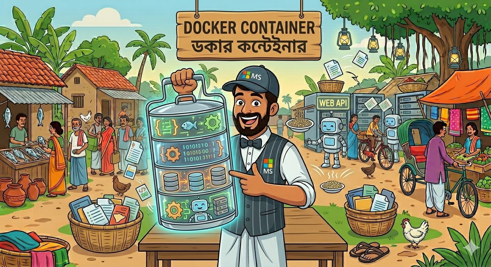
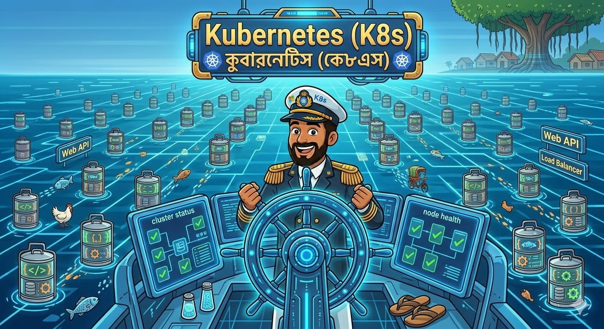

Docker & Kubernetes (টিফিন ক্যারিয়ার ও সর্দার)
("তোর পিসিতে চলে, কিন্তু বসের পিসিতে চলে না"—এই কান্নাকাটির অবসান!)


🐳 Docker (কন্টেইনার)
আগে আমরা পুরো একটা ঘর (Virtual Machine) ভাড়া নিতাম শুধু একটা অ্যাপ চালানোর জন্য। এখন আমরা শুধু একটা রুম (Container) ভাড়া নিই। ডকার তোর অ্যাপ আর সব লাইব্রেরি একটা প্যাকেটে ভরে দেয়।
- 🪶 হালকা (Lightweight): পুরো ওএস (OS) লাগে না, তাই সাইজ ছোট।
- 🌍 সব জায়গায় চলে (Portable): উইন্ডোজ, লিনাক্স, ম্যাক—যেখানেই ডকার আছে, সেখানেই চলবে।
- ⚡ ফাস্ট স্টার্ট (Fast Boot): ভার্চুয়াল মেশিনের মতো চালু হতে ৫ মিনিট লাগে না, সেকেন্ডেই রেডি!
# ডকারকে বলছি, .NET ইমেজ নামাও
FROM mcr.microsoft.com/dotnet/sdk:6.0
# সব কোড কপি করো
COPY . /app
# রান করো মামা!
ENTRYPOINT ["dotnet", "LaltuApp.dll"]
☸️ Kubernetes (K8s - জাহাজের সর্দার)
এখন ধর তোর কোম্পানিতে ১০০টা টিফিন ক্যারিয়ার (Docker Containers) চলছে। এগুলো কে সামলাবে? কে দেখবে কোনটায় খাবার পচে গেছে (Crash করেছে)? কে লোক বেশি আসলে নতুন টিফিন ক্যারিয়ার যোগ করবে?
এই বুদ্ধিমান ম্যানেজার বা সর্দারই হলো Kubernetes (যাকে ডেভেলপাররা শর্টকাটে K8s বলে)। সে একা হাতে কন্টেইনার চালু করে, বন্ধ করে, রিস্টার্ট দেয় আর ট্রাফিক বাড়লে কন্টেইনারের সংখ্যা অটোমেটিক বাড়িয়ে দেয় (Auto-Scaling)।
🧠 মগজ ধোলাই (DevOps Quiz)
মামা, Docker-এর আসল কাজ কী?